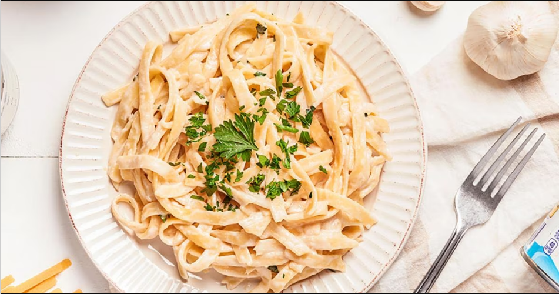

Vegan Alfredo Sauce

Description
Pasta Alfredo has been my favorite meal ever since I was a little girl.
Ingredients
- 1 cup - Cashews
- 2 tbsp - Nutritional Yeast
- 1 tps - onion powder
- 1 tps - garlic powder
- 1/2 tps - italian seasoning
- To Taste - salt, pepper and lemon juice
Steps
- As you prepare the pasta, get a small saucepan and bring water to a boil.
- Once the water is boiling, add the cashews and leave them a few minutes to soften.
- Once the cashews are soft, add all ingredients to the blender with around 1 cup of water.
- Taste the sauce and adjust to taste, add more water if you prefer .
- Add the sauce to your favorite pasta.
Hope you enjoy the recipe!
Return to main page